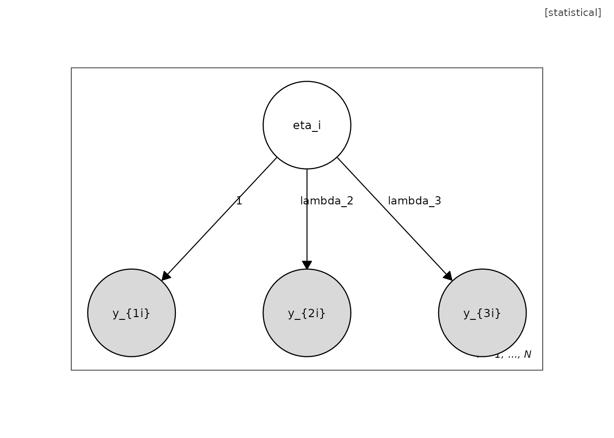
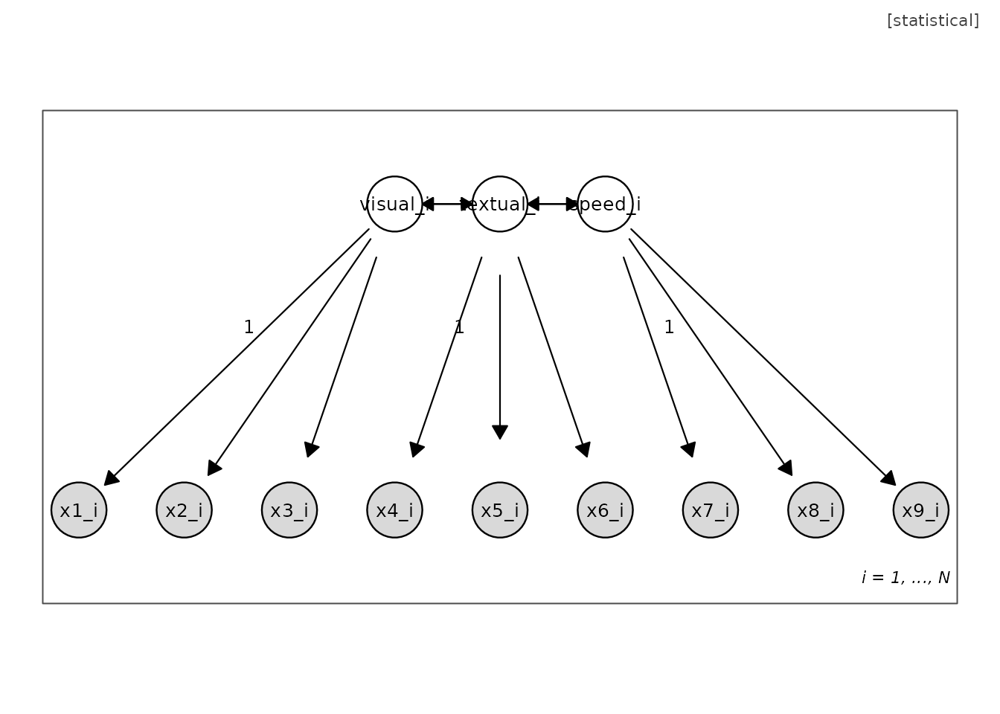
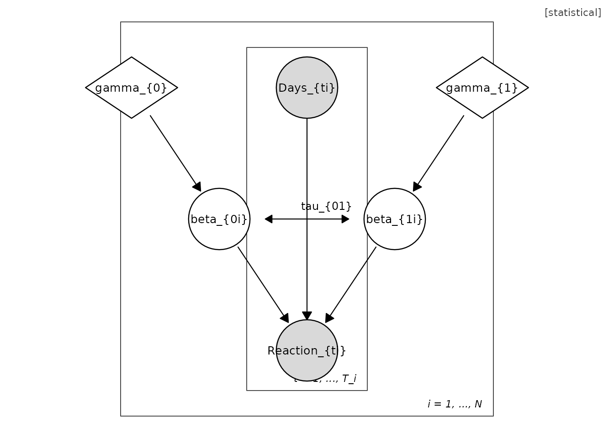
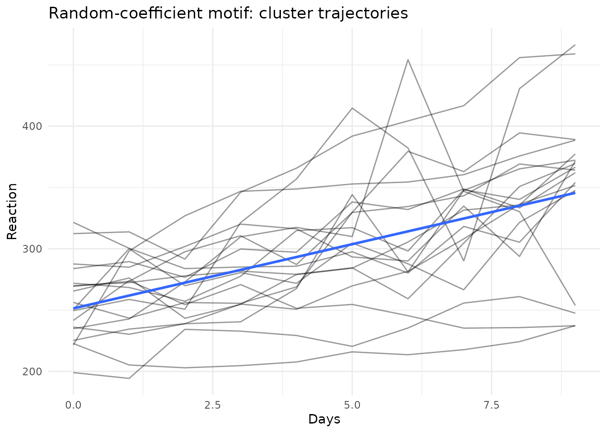

Unified Model Graphs: An Introduction
Hsiu-Ting Yu
2026-06-12
Source:vignettes/umg-intro.Rmd
umg-intro.RmdThe grammar in one paragraph
A Unified Model Graph (UMG) types every vertex on three dimensions: observability (fill: shaded = observed), support (shape: circle = continuous, square = categorical), and inferential role (border and dedicated shapes: diamond = fixed unknown parameter, triangle = known constant, double border = deterministic). Edges distinguish stochastic dependence, symmetric covariance, deterministic assignment, and mixture selection. Plates encode replication; nesting encodes hierarchy. Every well-formed diagram corresponds to a likelihood factorization, so the diagram is the model.
Building a one-factor model by hand
m <- umg_model(
nodes = list(
umg_node("eta", "$\\eta_i$", observed = FALSE, dist = "N(0, psi)"),
umg_node("y1", "$y_{1i}$", observed = TRUE),
umg_node("y2", "$y_{2i}$", observed = TRUE),
umg_node("y3", "$y_{3i}$", observed = TRUE)
),
edges = list(
umg_edge("eta", "y1", "dep", fixed = 1),
umg_edge("eta", "y2", "dep", label = "$\\lambda_2$"),
umg_edge("eta", "y3", "dep", label = "$\\lambda_3$")
),
plates = list(
umg_plate("person", c("eta", "y1", "y2", "y3"), "i = 1, ..., N")
)
)
m
#> Unified Model Graph (statistical badge)
#> vertices: 4 | edges: 3 | plates: 1
#> edge kinds: dep=3
plot(m)
From a lavaan model
model_syntax <- '
visual =~ x1 + x2 + x3
textual =~ x4 + x5 + x6
speed =~ x7 + x8 + x9
'
g <- umg_from_lavaan(model_syntax)
plot(g)
From an lme4 formula
g2 <- umg_from_lmer(Reaction ~ Days + (Days | Subject))
#> Warning: the 'findbars' function has moved to the reformulas package. Please
#> update your imports, or ask an upstream package maintainer to do so.
#> Warning: the 'nobars' function has moved to the reformulas package. Please
#> update your imports, or ask an upstream package maintainer to do so.
plot(g2)
TikZ export
umg_to_tikz() emits TikZ code in the dialect of the
umg-style.tex lexicon shipped in inst/tikz/, so
programmatic and hand-drawn diagrams are stylistically identical.
cat(head(umg_to_tikz(m), 12), sep = "\n")
#> % Generated by umg::umg_to_tikz()
#> % Requires \input{umg-style} in the preamble.
#> \begin{tikzpicture}
#> \node[vCL] (eta) at (0,0) {$\eta_i$};
#> \node[vCO] (y1) at (-1.6,-1.8) {$y_{1i}$};
#> \node[vCO] (y2) at (0,-1.8) {$y_{2i}$};
#> \node[vCO] (y3) at (1.6,-1.8) {$y_{3i}$};
#> \draw[eReg] (eta) -- node[elab]{1} (y1);
#> \draw[eReg] (eta) -- node[elab]{$\lambda_2$} (y2);
#> \draw[eReg] (eta) -- node[elab]{$\lambda_3$} (y3);
#> \begin{scope}[on background layer]
#> \draw[plate] (-2.15,-2.35) rectangle (2.15,0.55);Model-data duality
Each UMG motif induces a canonical exploratory display. With the sleepstudy data, the plate and random-coefficient motifs induce trellis and spaghetti displays:
data(sleepstudy, package = "lme4")
plots <- umg_eda_scaffold(g2, sleepstudy, id = "Subject", time = "Days")
names(plots)
#> [1] "scatter_Days_Reaction" "spaghetti" "facets"
plots$spaghetti
Inspecting a diagram as data
A diagram can be read out as ordinary data frames, which is
convenient for tabulating a model in a manuscript or editing it
programmatically before re-assembly with umg_model().
m_sem <- umg_sem(
measurement = list(F1 = paste0("y", 1:3), F2 = paste0("y", 4:6)),
structural = list(c("F1", "F2"))
)
as.data.frame(m_sem) # edges
#> from to kind label fixed
#> 1 F1 y1 dep 1
#> 2 F1 y2 dep $\\lambda_{F12}$ NA
#> 3 F1 y3 dep $\\lambda_{F13}$ NA
#> 4 F2 y4 dep 1
#> 5 F2 y5 dep $\\lambda_{F22}$ NA
#> 6 F2 y6 dep $\\lambda_{F23}$ NA
#> 7 F1 F2 dep NA
as.data.frame(m_sem, what = "vertices") # vertices
#> name label observed support role dist fill annot
#> 1 F1 $F1_i$ FALSE continuous rv N(0, psi) <NA> <NA>
#> 2 F2 $F2_i$ FALSE continuous rv <NA> <NA> <NA>
#> 3 y1 $y1_i$ TRUE continuous rv <NA> <NA> <NA>
#> 4 y2 $y2_i$ TRUE continuous rv <NA> <NA> <NA>
#> 5 y3 $y3_i$ TRUE continuous rv <NA> <NA> <NA>
#> 6 y4 $y4_i$ TRUE continuous rv <NA> <NA> <NA>
#> 7 y5 $y5_i$ TRUE continuous rv <NA> <NA> <NA>
#> 8 y6 $y6_i$ TRUE continuous rv <NA> <NA> <NA>
summary(m_sem)
#> Unified Model Graph summary (statistical badge)
#> -----------------------------------------------
#> Vertices: 8 (observed rv: 6, latent rv: 2, parameters: 0, constants: 0)
#> Categorical-support vertices: 0
#> Edges: dep=7
#> Plates: 1 (person)
#> Counting rule: 21 data moments, 13 free parameters, df = 8Round-tripping to lavaan
umg_to_lavaan() is the inverse of
umg_from_lavaan(): it emits lavaan model syntax from a
diagram. A directed edge from a latent to an observed vertex becomes a
measurement loading (=~); other directed edges become
regressions (~); covariance edges become ~~.
The correspondence between a diagram and a fitted model is thus
operational in both directions.
cat(umg_to_lavaan(m_sem))
#> umg_to_lavaan(): latent-to-latent paths written as regressions ('~'); change to '=~' by hand if a higher-order measurement model is intended.
#> # measurement model
#> F1 =~ 1*y1 + y2 + y3
#> F2 =~ 1*y4 + y5 + y6
#> # structural / regression model
#> F2 ~ F1
syntax <- "visual =~ x1 + x2 + x3\ntextual =~ x4 + x5 + x6"
g <- umg_from_lavaan(syntax) # syntax -> diagram
back <- umg_to_lavaan(g) # diagram -> syntax
cat(back)
#> # measurement model
#> visual =~ 1*x1 + x2 + x3
#> textual =~ 1*x4 + x5 + x6
#> # (co)variances
#> visual ~~ textual